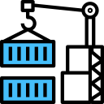
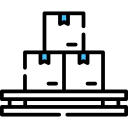
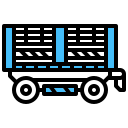
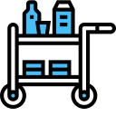
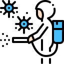
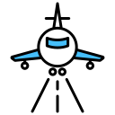
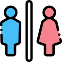
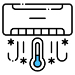
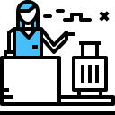

여객사업
서비스소개
고객이 원하는 최상의 서비스를 제공하기 위해 지속적으로
서비스품질을 up-grade함은 물론
고객만족을 위해 최선을 다하고 있습니다.
-

- 화물,수하물 상하역 서비스
- 화물 및 수하물을 항공기에 탑재,하기합니다.
-

- 수하물 조업 서비스
- 소중한 고객의 수하물을 행선지로 별로 컨테이너에 적재하고 분류하여 고객에게 정확히 인도될 수 있도록 합니다.
-

- Push Back, Towing서비스
- 항공기를 자체 동력으로 출발할 수 있는 지점까지 밀어주거나,정비 또는 운항 목적으로 지정된 장소로 이동하는 업무를 수행합니다.
-

- 기내식 운반,탑재 / 하기 서비스
- Food Service Car를 이용하여 기내식 및 기내물품을 항공기에 싣고 내립니다.
-

- 객실 청소,외부 세척 서비스
- 쾌적한 항공기 내부환경 유지를 위한 기내청소 서비스와 항공기 표면의 세척 및 광택 작업 등 항공기 외부 세척 서비스를 제공합니다.
-
- 제설,제빙,방빙 서비스
- 항공기 표면의 눈과 얼음을 제거하는 제설.제빙 서비스와 얼음이 어는 것을 방지하는 방빙 서비스를 제공합니다.
-

- 유도,Follow-Me,인터폰 서비스
- 도착편 항공기를 안전하게 유도하는 서비스와 항공기와 지상간의 의사소통을 위한 인터폰 서비스를 수행합니다.
-

- Step Car, Ramp Bus 서비스
- 탑승 시설이 없는 주기장에서 승객과 승무원의 항공기 탑승과 하기,이동을 위해 Step Car 및 Ramp Bus를 운행합니다.
-

- Water,Toilet 서비스
- 기내에서 사용할 물의 공급,오물수거 서비스를 수행합니다.
-

- 전원공급,객실 냉난방 서비스
- 운항 준비중인 항공기에 전원 공급 및 출발 항공편의 엔진 시동,쾌적하고 안락한 객실환경을 위한 냉난방을 지원합니다.
-

- Passenger,운항지원 서비스
- 승객의 탑승 수속, 출발 및 도착 지원 서비스, 운항지원 서비스는 당사 자회사인 에어코리아(Airkorea)에서 수행하고 있습니다.
-
- Farewell 서비스
- 모든 지상조업을 마친 후 승객의 안전하고 편안한 여행을 기원하며 항공기가 이륙하기까지 정성스러운 마음으로 배웅합니다.